Best-in-class PvP tooling — Sovereign (sov) and Belfry tools, the flank layouts that go with them, the traditional wall/moat and wall/shield presets, and the mindset that keeps you supplied and unpredictable. PvP is a matter of counter-tooling; this is how to read a defender and answer them.
What this guide covers:
- Best-in-class PvP tools (belfs / sov tools)
- Why autofill is not always your best friend
- Strategic abundance — the near-infinite tools concept
- Assessing a defender
- Tool preset suggestions
Sovereign Era tools
When utilising these tools, you must understand tool limits and attack layouts.
You must factor your Generals, and wave placement becomes extremely critical. In general, Wave 6 & 12 are the most powerful waves, as most Generals support "every 2 waves" & "every 3 waves" skills — both of these skill timings land on Wave 6 & 12.
Attack layout is important. Using sov tools means you need to try and balance your waves so that when the enemy sees your attack, they see an evenly organised hit that doesn't favour either defending flank. If you improperly layer your attack, you will openly expose a heavily tooled flank and a lightly tooled flank — and as a defender, you're going to defend the lightly tooled flank.
There is no single specific layout that can be provided, because of the dynamic nature of defences and flank-sided preset tooling. You must set up your attack so that your strongest waves attack the biggest/strongest flank. For example: if the defender is centre, use Centre Range/Melee; if the defender is left flank, use Range/Melee Left.
Sov layouts
Range Left — focus sov tools on the left flank targeting range troops; the right side uses standard wall/shield tooling.
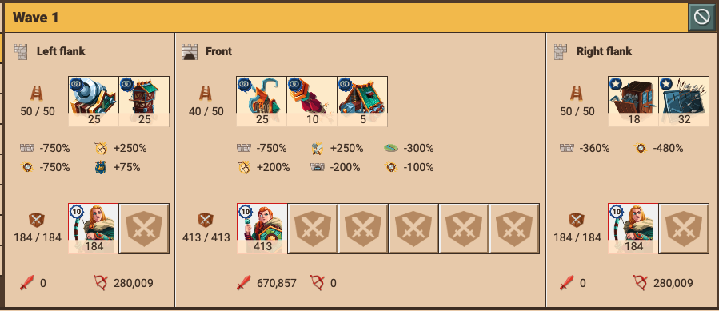
Melee Left — focus sov tools on the left flank targeting melee troops; the right side uses standard wall/moat tooling.
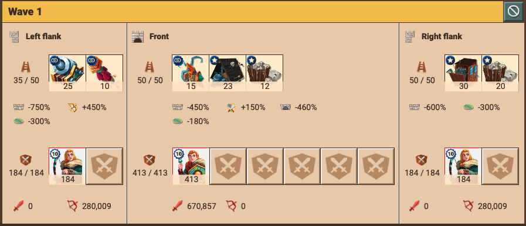
Range Right — focus sov tools on the right flank targeting range troops; the left side uses standard wall/shield tooling.
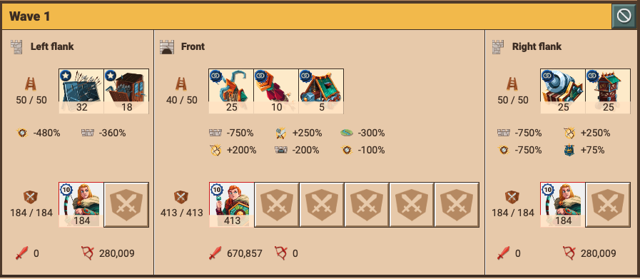
Melee Right — focus sov tools on the right flank targeting melee troops; the left side uses standard wall/moat tooling.
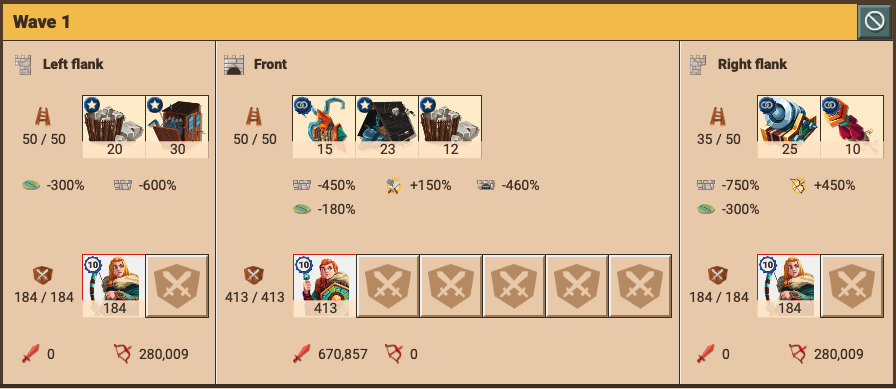
Centre Range — given the size of defensive walls, centre defence has become a more viable method to hold an attack, causing major losses. Understanding placement of centre range waves in conjunction with your Generals is important. This focuses sov tools on the centre targeting high range/high melee; the left and right flanks use standard wall/shield tooling.
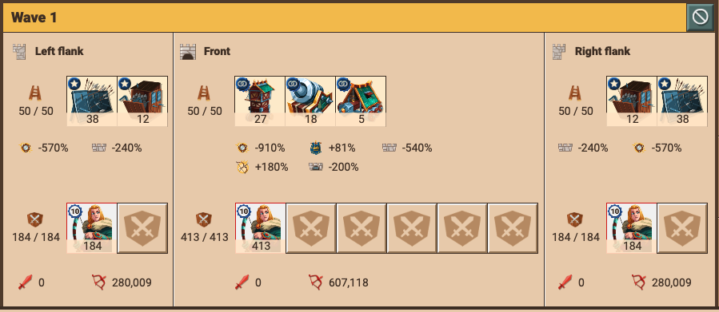
Centre Melee — again, given the size of defensive walls, centre defence has become a more viable method to hold an attack, causing major losses. This should make up the bulk of a centre flank set-up; try to use it in the "off" waves from Generals to maximise range strength. It focuses sov tools on the centre targeting high melee; the left and right flanks use standard wall/shield tooling.
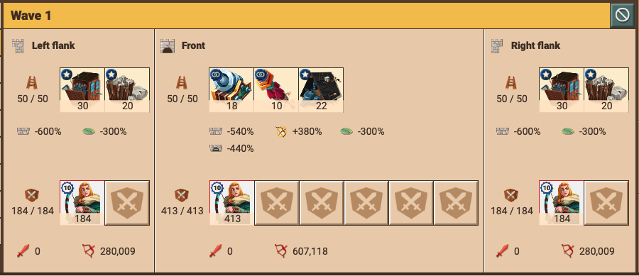
Traditional Era tooling
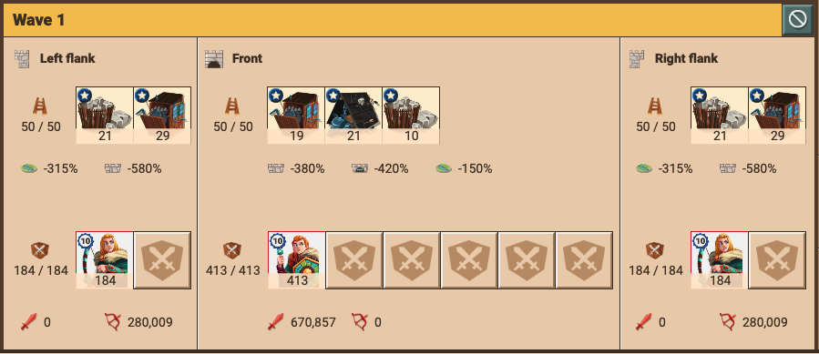
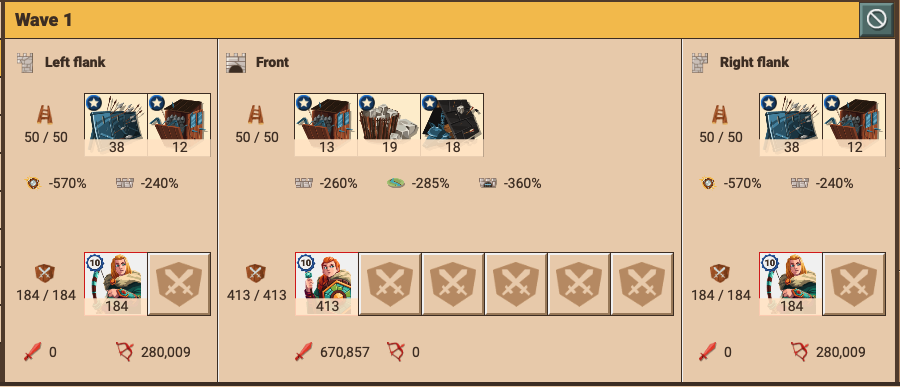
Attack tooling presets:
- Tooling Preset 1 — Wall/Moat
- Tooling Preset 2 — Wall/Shields
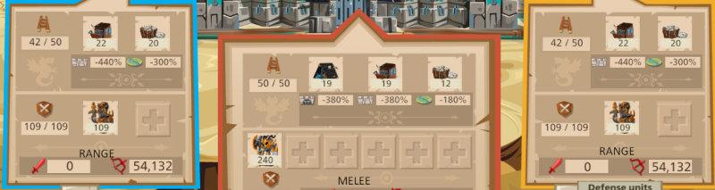
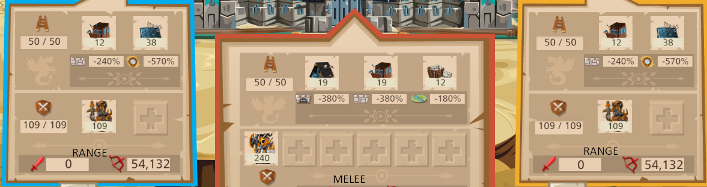
Most effective with 140+ / 140+ / 100+ Commanders.
Rule of Average Shielding (Preset 2)
- 6 wavers = 2 waves of shields
- 9 or 11 wavers = 3 waves of shields
Too much or too little can result in a wall held if the player is online. Use your judgement when hitting players with bad setups.
When to use +3 waves (+30% Flank & +30% Front)
- If flank space is small (less than 110)
- Wall wiping (as a side activity)
When to use +5 waves
- If flank space is large (110+)
- If the aim is to hit the wall more times to reduce tooling
- If the enemy has a large wall and you need to hit it more
Standard layouts
RANGE Centre opens each of these.
| Wave | 6 waver | 9 waver | 11 waver |
|---|---|---|---|
| 1 | Preset 1 · RANGE Centre | Preset 1 · RANGE Centre | Preset 1 · RANGE Centre |
| 2 | Preset 1 | Preset 1 · RANGE Centre | Preset 1 · RANGE Centre |
| 3 | Preset 1 | Preset 2 | Preset 2 |
| 4 | Preset 2 | Preset 2 | Preset 2 |
| 5 | Preset 2 | Preset 1 | Preset 1 |
| 6 | Preset 1 | Preset 1 | Preset 1 |
| 7 | — | Preset 1 | Preset 1 |
| 8 | — | Preset 1 | Preset 1 |
| 9 | — | Preset 2 | Preset 1 |
| 10 | — | — | Preset 1 |
| 11 | — | — | Preset 2 |
These are standard layouts. You are welcome to change the placing of the presets in different waves depending on the defender's setup:
- If the defender has more range, move shields closer to the front.
- If the defender has more melee, move shields further back.
Note: this set of tooling assistance was created in 2021.
Strategic abundance
If you have ever run out of tools during a war / event or other attack, this is for you.
Within the tooling space, I term "strategic abundance" as the concept of having so many tools that you shall never operationally run out.
This has become a viable concept through the Blacksmith Tent. For me, I always purchase all the available attack and defence tools for PvP so that when there is a war, running out of tools is the least of my concerns. This particularly concerns low-power high-impact attacks such as flank hits / wall wiping. Having such a vast supply of tools ensures you, as an attacker, have enough to make even basic attacks.
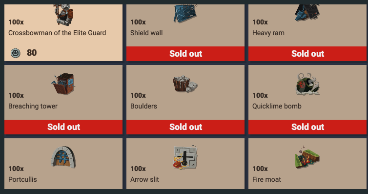
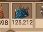
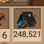
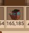
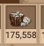
Constant production of sov tools for stockpiling helps to secure your own supply.
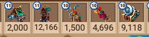
Mini-guide: wall wiping
Wall wiping is one of those low-power, high-impact attacks Daniel flags above: cheap, minimal sends aimed at a defender's wall purely to chip it down and burn through the tooling sitting on it — so the real hit (yours or an ally's) lands against a weaker, less-tooled wall.
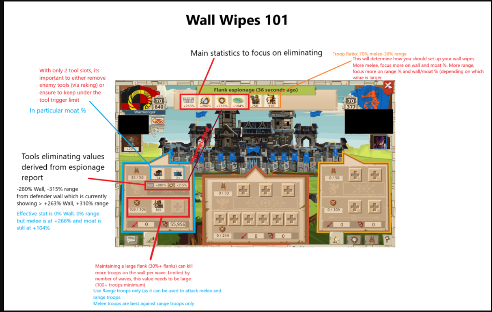
- What to send: the cheapest thing that still connects — flank hits with minimal cost, on a +3-wave preset (+30% Flank & +30% Front). Daniel lists +3 waves specifically for "wall wiping (as a side activity)" and when flank space is small (<110).
- Or go wide: if the aim is to hit the wall more times to reduce its tooling, that's a +5-wave case — exactly his "hit the wall more times to reduce tooling" note.
- Why you need strategic abundance: wiping eats tools fast, so it only works if you've stockpiled enough to never run dry — the very case the abundance concept is built for.
- When: as a side activity alongside a war or coordinated hit, to soften a big wall before the heavy waves commit.
Auto fill
It is a natural PvP sin that any player using autofill to set up the majority of their attacks will generally always lose.
- Autofill is not a good way to PvP. It's good for eventing.
- Autofill is only good if you understand what it's tooling for you and you can leverage it.
- Instead of autofill, consider investing the rubies to get more presets — preset attacks are much easier with the new attack interface.